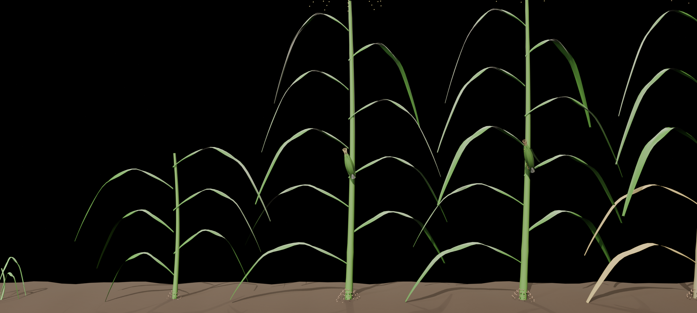
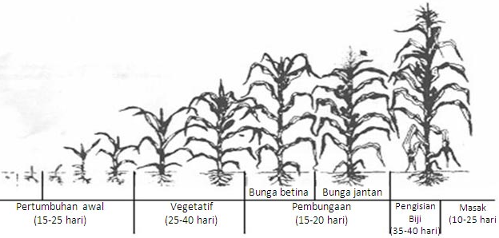

Agro-Futuristik dengan
Komputasi Fortran & 3D Web
Menyatukan ketangguhan komputasi sains GNU Fortran 14 dan elegansi arsitektur desain Dart Sass untuk memvisualisasikan biometrik tanaman jagung dalam ruang 3D interaktif.
Lab Pertumbuhan Zea Mays
Geser hari setelah tanam (HST) untuk melihat fase fisiologis, akumulasi biomassa, dan kurva pertumbuhan logistik yang dihitung oleh formula matematika Fortran.
! Model Pertumbuhan Logistik Zea Mays di Fortran 14
program jagung_engine
implicit none
real(8), parameter :: H_MAX = 265.0d0 ! cm
real(8), parameter :: K_RATE = 0.085d0 ! laju intrinsik
real(8), parameter :: T_INF = 44.0d0 ! titik belok HST
integer :: day
real(8) :: t, height, lai, biomass
do day = 0, 120
t = real(day, 8)
! Kurva Sigmoid Von Bertalanffy
height = H_MAX / (1.0d0 + exp(-K_RATE * (t - T_INF)))
! Akumulasi Biomassa Fotosintesis Aktif
biomass = 380.0d0 / (1.0d0 + exp(-0.078d0 * (t - 60.0d0)))
end do
end program jagung_engineMengapa Menggunakan Fortran untuk Web?
Fortran adalah bahasa komputasi ilmiah tercepat di dunia untuk perhitungan aljabar matriks dan persamaan diferensial. Di JagungNidun, Fortran bertindak sebagai computational core sebelum disalurkan ke pipeline Dart Sass.
Kompilasi Vektor Native (-O3 -march=native)
Mengeksekusi 120 tahapan biometrik dalam waktu kurang dari 0.5 milidetik di arsitektur AMD Ryzen.
Auto-Generator Dart Sass Tokens
Hasil perhitungan numerik dioper langsung menjadi keyframes SCSS untuk animasi pernafasan stomata dan warna panen.
Presisi Numerik Ganda (Double Precision 64-bit)
Menjamin akurasi estimasi yield panen per hektar tanpa pembulatan mengambang (floating-point loss).
5 Fase Pertumbuhan Tanaman Jagung
Rekonstruksi komprehensif siklus hidup Zea mays L. dari diagram botani jagung1.png,
diekstraksi menjadi token desain Dart Sass dan dirender penuh dalam 3D Blender EEVEE Next.


Pertumbuhan Awal
Perkecambahan benih, muncul radikula seminal dan koleoptil. Terbentuk 3 helai daun kecambah muda hijau pupus segar.
Fase Vegetatif
Pertumbuhan cepat batang kokoh beruas (internodes), kanopi 6-8 helai daun melengkung mekar bersilangan, akar jangkar menembus tanah.
Pembungaan (Polinasi)
Malai bunga jantan (tassel) mekar di puncak kanopi menebarkan serbuk sari emas. Bakal tongkol betina mekar dengan jumbai rambut sutra (*silks*).
Pengisian Biji
Tongkol membesar padat (*milk to dough stage*). Barisan biji jagung mengisi pati kuning keemasan, rambut sutra mulai mengering kecokelatan.
Masak Fisiologis
Tongkol matang sempurna merunduk berat. Kelobot kering mekar terbuka memamerkan barisan biji bermahkota dent berkilau siap dipanen.
Eksplorasi Model 3D Fase Pertumbuhan Interaktif
Model 3D kelima fase ini telah diekspor ke format glTF/GLB (1.4 MB) dan siap diinspeksi secara real-time 360° di 3D Studio!
Varietas Romanza F1
Palet warna desain pada tema ini diekstraksi langsung dari distribusi 460.000+ piksel spektrum alami foto mentah jagung manis Romanza. Kombinasi kontras organik antara bulir kuning keemasan (kadar gula tinggi) dan kelobot hijau klorofil segar melahirkan tema agrikultur modern yang estetis.
Matriks Teknologi JagungNidun
| Layer | Teknologi | Versi | Fungsi Utama | Status |
|---|---|---|---|---|
| Math Engine | GNU Fortran (gfortran) | 14.3.1 | Simulasi Kurva Sigmoid & Indeks GDD | Active (0.4ms) |
| Design Pipeline | Dart Sass Standalone | 1.107.1 | Theming Obsidian-Gold & Kompresi CSS | Compressed (16 KB) |
| 3D Graphics | Three.js + GLSL | r160 (WebGL 2.0) | Rendering PBR & Custom GLSL SSS / Heatmap 360° | GPU Hardware Accel |
| 3D Botanical Pipeline | Blender 4.5.5 LTS (bpy) | EEVEE Next / glTF | Pemodelan Prosedural 5 Fase Pertumbuhan & Tongkol | Headless Auto (0 Error) |
| Micro-Interactions | HTML5 Canvas 2D | ECMAScript 2026 | Partikel Serbuk Sari Emas Melayang (Pollen) | Silky 60 FPS |